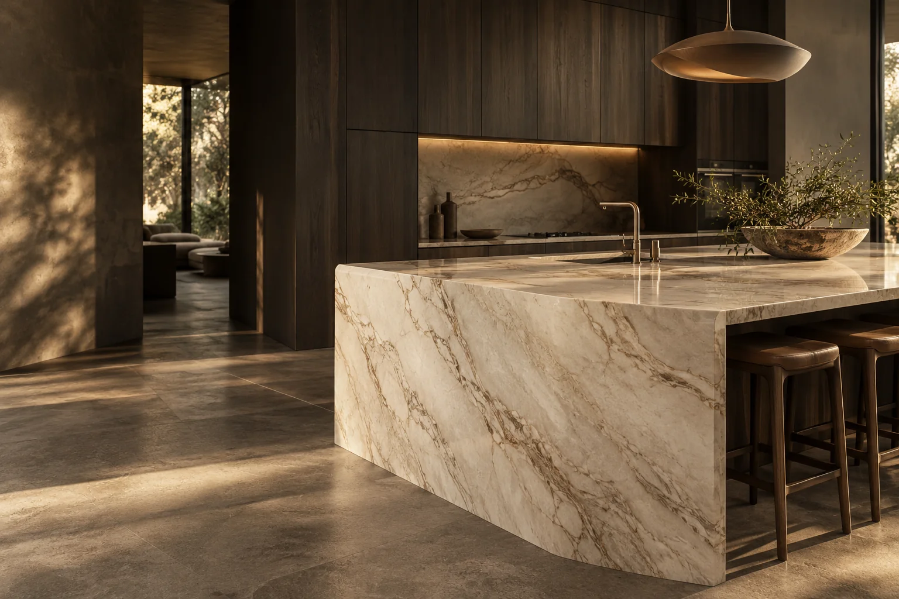
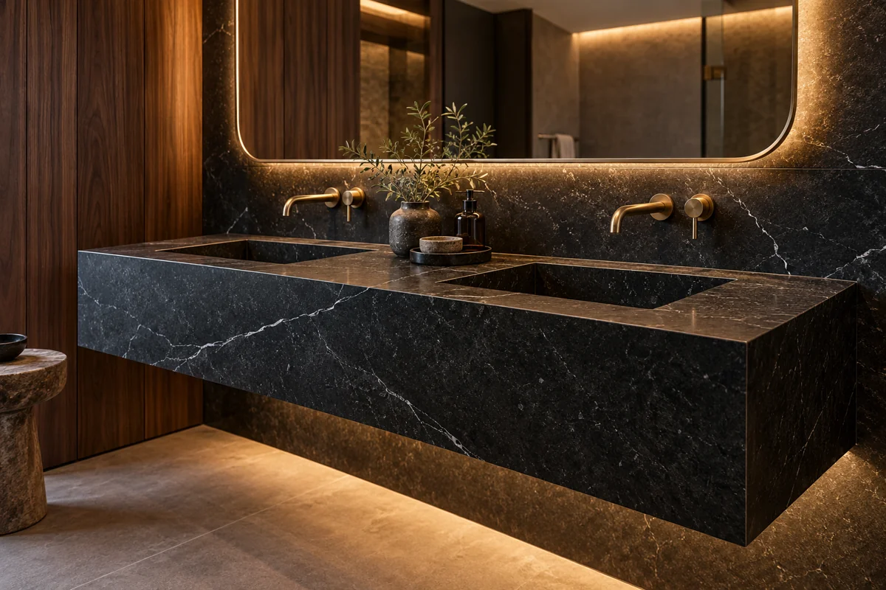

Cozinha · Pedra clara

MARMORARIA · PROJETOS SOB MEDIDA
A natureza
desenha.
A gente dá forma.
Bancadas, revestimentos e peças em pedra. Encontre a matéria que conversa com o seu espaço.
COZINHAS · BANHEIROS · MOBILIÁRIO
IMAGEM E AMBIENTE ILUSTRATIVOS
PEDRA, DESENHO
E POSSIBILIDADES.
Cada superfície muda a maneira de sentir um ambiente. Explore materiais, observe os detalhes e traga as referências para o seu projeto.
01 — A ESCOLHA DA MATÉRIA
O começo de
uma boa composição.
Tons, texturas e veios para explorar. A escolha final considera o uso, o acabamento e as características do material.

01 / GRANITO
Presença e textura.
Uma família de pedras com diferentes granulações e tonalidades. Explore opções de chapa e acabamento para a sua composição.
Referências visuais, não um catálogo técnico. Tonalidade, composição, disponibilidade e indicação de uso devem ser confirmadas com a empresa.
02 — A PEDRA NO ESPAÇO
Imagine o seu
próximo ambiente.
Abra os detalhes e salve as referências. Suas escolhas acompanham o pedido de orçamento.
Cozinha · Tons verdes
Natureza em primeiro plano.
Banheiro · Pedra escura
Contraste que acolhe.
Mobiliário · Formas orgânicas
A matéria ganha curvas.
Salve as referências que combinam com seu projeto.
Usar no meu pedido ↗Ambientes e imagens gerados por IA para esta demonstração. Não representam obras executadas ou produtos disponíveis.
03 — DO PRIMEIRO TRAÇO AO PROJETO
Primeiro, entender.
Depois, dar forma.
Um pedido bem explicado é o começo de uma conversa sobre o seu espaço.
Conte a sua ideia.
Escolha o ambiente e compartilhe referências, medidas aproximadas e o que você imagina para o projeto.
Alinhe os detalhes.
Materiais, recortes, acabamento e condições de execução precisam ser avaliados antes da proposta.
Defina o próximo passo.
Medição técnica, orçamento e etapas de execução são combinados com a empresa responsável.
04 — SEU PROJETO COMEÇA AQUI
Vamos falar
da sua ideia?
Mesmo sem todas as medidas, você já pode organizar o que precisa. O orçamento definitivo depende da avaliação do projeto.
PREPARE SEU PEDIDO DE ORÇAMENTO
Seu pedido, organizado.
Esta é uma prévia da mensagem para o atendimento. Nenhum dado foi enviado. Em um site contratado, o contato é configurado com o WhatsApp da empresa.
ANTES DE COMEÇAR
Algumas boas
perguntas.
Preciso escolher a pedra antes de pedir orçamento?
Não. Você pode indicar o ambiente, o efeito visual desejado e pedir orientação. A escolha depende do uso e das características técnicas do material.
As medidas do formulário são definitivas?
Não. Elas servem para iniciar a conversa. Medição técnica, recortes e compatibilização com cubas, metais e eletrodomésticos precisam ser confirmados antes da execução.
Posso enviar fotos ou a planta do ambiente?
Sim, na conversa com a empresa responsável. Esta demonstração prepara apenas um resumo em texto; não recebe nem envia anexos.
Como são definidos valor, prazo e instalação?
Essas condições devem constar no orçamento da empresa, conforme material, dimensões, acabamento e escopo. Esta demonstração não apresenta preços nem condições de uma marmoraria real.